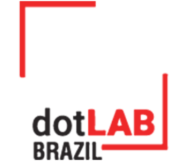

Projeto hansen.ai
Inteligência Artificial para Hanseníase
O Hansen.ai é um projeto que utiliza inteligência artificial, ciência de dados e tecnologia em saúde para apoiar o diagnóstico, o acompanhamento clínico e a vigilância epidemiológica da hanseníase no Brasil.

Transformação Digital
Digitalização de processos em saúde pública
Ciência de Dados
Análise qualificada de dados do SUS
Inteligência Artificial
Modelo preditivo para suporte clínico
Visualização de Dados
Painéis interativos para decisões estratégicas
0
Casos de Hanseníase
0
Incapacidade não avaliada
0
Avaliação inconsistente
0
Piora na incapacidade
O hansen.ai é dividido em quatro grandes etapas
Uma abordagem estruturada em quatro grandes etapas que integram tecnologia, ciência de dados e saúde pública para apoiar o diagnóstico, o monitoramento clínico e a tomada de decisão no enfrentamento da hanseníase.
Desenvolvimento de Aplicativos e Processos
Criação do ANSd, plataforma para coleta e consulta de dados em campo. Integra o trabalho dos profissionais de saúde com o modelo de IA para apoio ao tratamento da hanseníase.
Digitalização da ANS
Transformação dos formulários de Avaliação Neurológica Simplificada (ANS) em dados digitais padronizados. Essa etapa garante a qualidade e uniformidade dos dados que alimentarão o sistema preditivo.
Visualização de Dados das ANS e do SINAN
Desenvolvimento de painéis interativos para análise de dados epidemiológicos. Permite identificar padrões, inconsistências e apoiar políticas públicas de forma clara e acessível.
Desenvolvimento do modelo de IA hansen.Ai
Criação de um modelo preditivo treinado com dados reais do SUS. Seu objetivo é antecipar a progressão da hanseníase e auxiliar decisões clínicas personalizadas.
Conheça nossos parceiros
